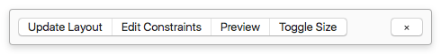
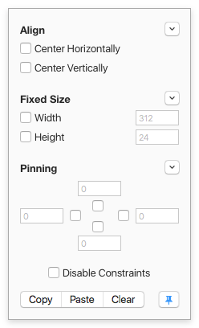
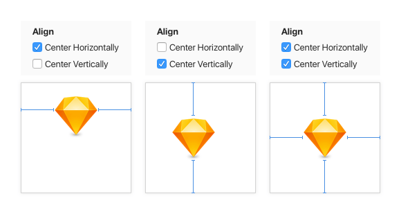
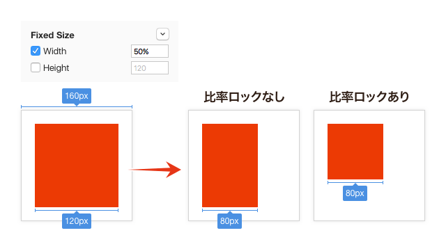
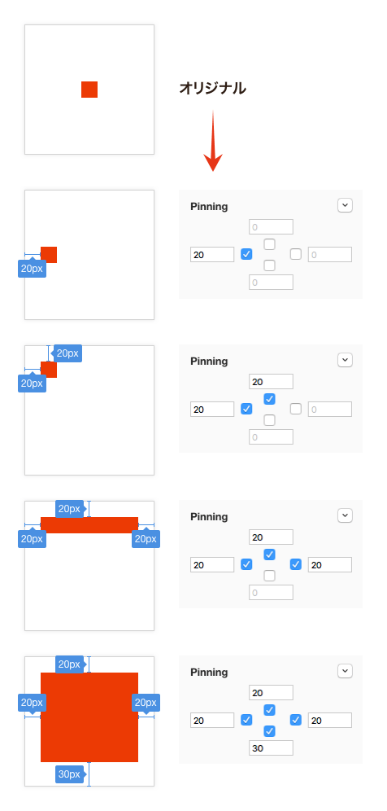
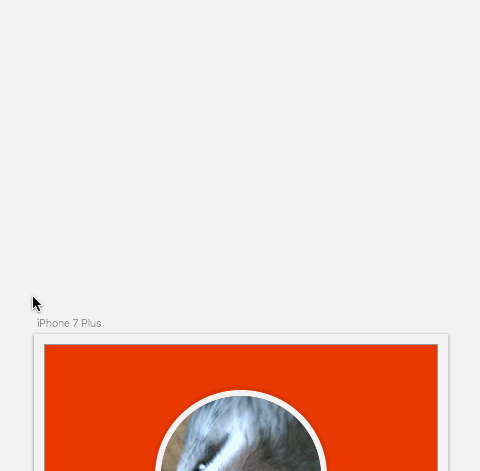

Sketchプラグインを適当に選んで紹介していく、Sketch Plugin Advent Calendar 2016 24日目は、Auto Layoutを実現する「Fluidプラグイン」です。
2015年11月登場のプラグインですので、ちょくちょく名前を目にされた方もいらっしゃるのではないかと思います。
Sketch 39でシンボルやグループのリサイズ方法を指定できるようになったものの、アートボードをリサイズした時はやはり任意でオブジェクトのサイズ変更が必要です。Fluidでは、Update Layoutボタンを押すだけで、キャンバスに合わせてリサイズしてくれます。
プラグインメニューからももちろん使えますが、「Show/Hide Toolbar」でウィンドウ下にツールバーを表示することもできます。 ツールバーを表示するショートカットはControl ＋ Shift ＋ Tです。

Edit Constraintsパネル
AutoLayoutの設定は、Edit Constraintsパネルで行います。ツールバーから表示でき、ショートカットはControl ＋ Shift ＋ Cに設定されています。

パネルでAlign（揃え）・Fixed Size（サイズ調整）・Pinning（固定位置）の3つが設定可能です。
各ラベル右にある下三角は、それぞれの基準とする親を選択します。Canvasはアートボード、Groupはそのままグループ、Previous Siblingは直前の兄弟レイヤー（レイヤーリストですぐ下にあるレイヤー）が基準になります。グループ内の一番下にあるレイヤーにPrevious Siblingを設定する場合、グループの境界が基準となるため、Update Layerを繰り返し適用するとレイヤーが移動します。
Align / Fixed Size / Pinning3つすべてを設定することはできますが、あまり細かく設定すると動作がわからなくなるため、ほどほどにしておきましょう。
Align
Center Horizontallyで左右のセンター、Center Verticallyで上下のセンターへ来るように設定されます。

Fixed Size
幅および高さの設定を行います。数値は実寸とパーセンテージによる指定が可能で、パーセンテージにした場合、基準とする親に対するサイズに設定されます。また比率ロックが入っていると、それに応じてスケールされます。

Pinning
していた方向の境界を、基準とする親の境界からどの位置に配置するかの設定を行います。こちらもFixed Sizeと同様に、実寸とパーセンテージによる指定が可能です。

そのほかの機能
Disable Constaintsへチェックを入れると、Update Layoutを無視します。
Copy・Paste・Clearは、押したボタンのラベル通りの動作を実行します。
ピンマークを有効にすると、オブジェクトの選択をはずしてもパネルを表示したままにします。基本的にはピンマークは有効にしておいた方がよいでしょう。
設定した状態をアップデート
ツールバーのUpdate Layoutクリックすれば、設定した状態を確認することが可能です。ショートカットはControl ＋ Shift ＋ Lです。
アートボードサイズを変更する
Toggle Sizeでアートボードサイズを変更でき、変更と同時にUpdateされます。

ただ残念ながら、追加したアートボードサイズは一覧に表示されないため、ウェブデザインには不向きだったりします……GitHubのIssueには上がっているので、将来的に実装されるかもしれません。
プレビューする
PreviewはFluid用の別ウィンドウが開き、アートボードサイズの変更・アートボードのコピー・書き出しができます。アートボードサイズの変更はプレビューウィンドウでのみ適用されるため、オリジナルアートボードのサイズはそのままです。
そのほかの設定
Settingsでは、FluidのUIにフォーカスがない場合、半透明にするかどうかの設定ができます。
アートボードの変更でカスタムサイズを選択できないのがネックですが、工夫次第でとても使いがいのあるプラグインになっています。慣れるまでちょっと面倒なところもありますが、ぜひ使ってみてくださいね。
それでは、楽しいSketchライフを。